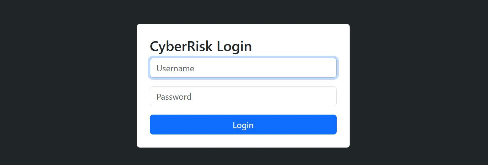
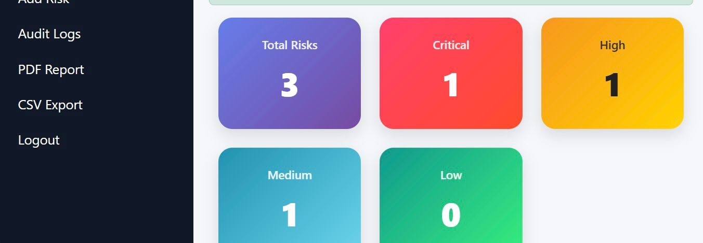
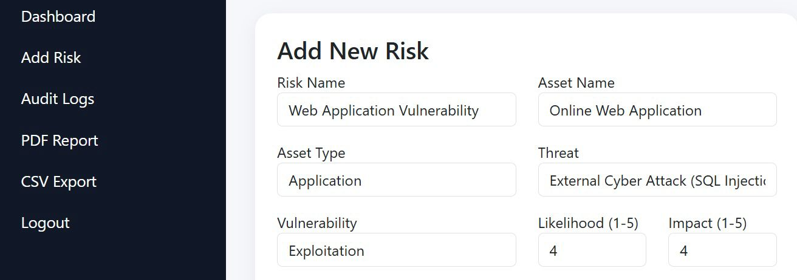
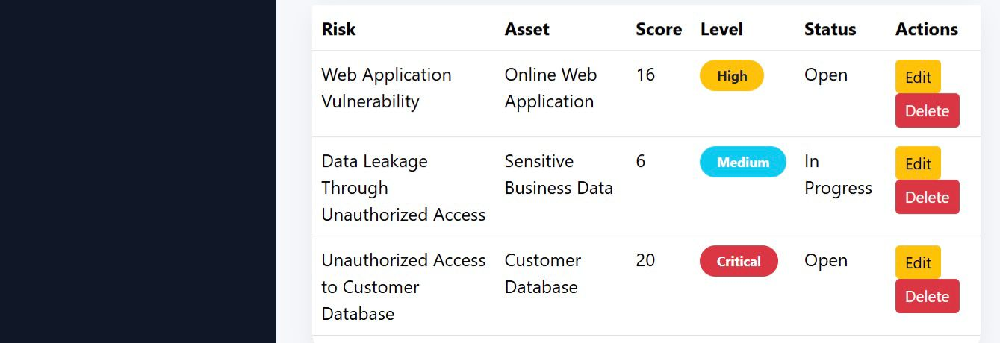
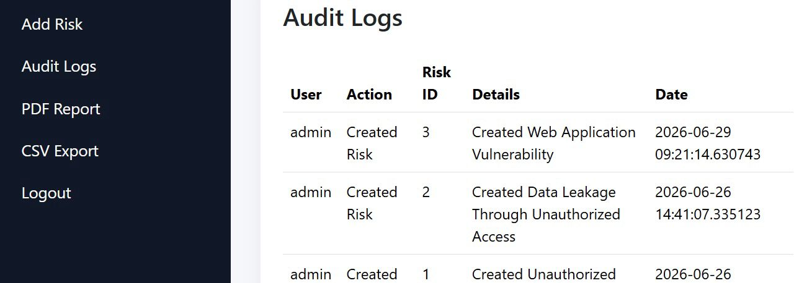

Passionate Information Systems graduate with practical experience in Cybersecurity, IT Governance, Risk Management, Compliance, Security Auditing and Python-based cybersecurity solutions.
Information Systems graduate with practical experience in Cybersecurity, Risk Management, Governance, Compliance, Security Auditing and Data Analysis. Experienced in evaluating security controls, conducting cybersecurity audits, developing dashboards, analyzing organizational risks, and building Python & SQL applications to support cyber risk governance and decision making. Strong knowledge of cybersecurity frameworks, standards and governance practices, with hands-on experience developing full cybersecurity projects from planning to implementation.
Conducted cybersecurity audits and assessed security controls against organizational requirements.
Monitored remediation activities, documented observations and supported compliance initiatives.
Developed Power BI dashboards and participated in governance, compliance and cybersecurity reporting.
Analyzed operational datasets and investigated business incidents to support daily operations.
Prepared analytical reports and visualized key performance indicators for stakeholders.
Worked collaboratively with teams to improve data-driven decision making and reporting accuracy.
A selection of academic and practical projects demonstrating software development, cybersecurity, governance and risk management skills.
A web-based cybersecurity risk management platform developed using Python, Flask and SQL to help organizations identify, assess, prioritize and monitor cybersecurity risks.
The platform supports secure authentication, centralized risk management, dashboard analytics, audit logs, PDF report generation and CSV export.





ISC2
The Saudi Authority of Internal Auditors
Saudi Council of Engineers
Udemy
delad33@icloud.com
+966 55 912 8998
linkedin.com/in/dalalalammari
Saudi Arabia